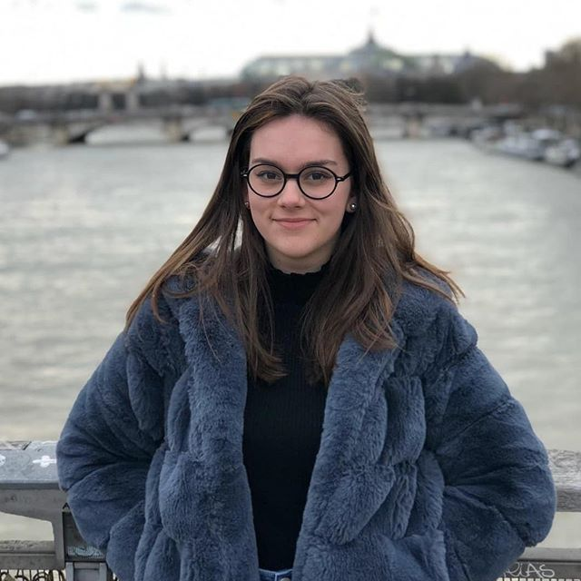

Hello everyone 

I am Faustine, an EMLV student. I am 18 and I am passionate about many things in life. I am fond of travels, karate is my favorite sport, I am crazy about cooking, I enjoy to speak different languages, I love playing music...
EMLV's websiteTravels✈️
I am fond of travels. I adore take the plane and go far away. I feel disorientated. In my mind, to travel means: discover new cultures, new people, new landscapes... It allows you to deepen your encounters, emotions and sensations.
Sport🤾
I have been doing karate since I was little. I think it's a good sport that combines bodybuilding, self-defense and flexibility. If I could I would do every sport there is. I run from time to time and I still have my ballet slippers... I am crazy about sport!
Cooking🧁
Cooking is one of my favorite hobbies. I like spending time in my kitchen to cook meals, cooked dishes, pastries, cakes...
Languages🤲
I am proud to be able to speak four languages, more or less fluently : French, English, Spanish and sign languages. It is tough to learn a language because of the vocabulary and the grammar. I believe that the motivation to learn is really necessary. It's important to speak and listenning to movies or the radio to improve.